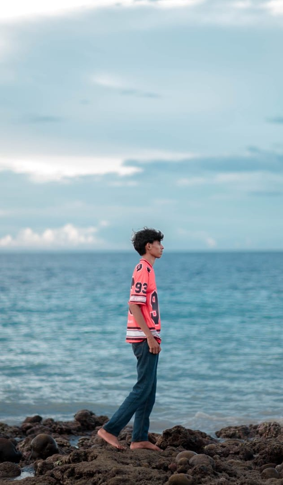
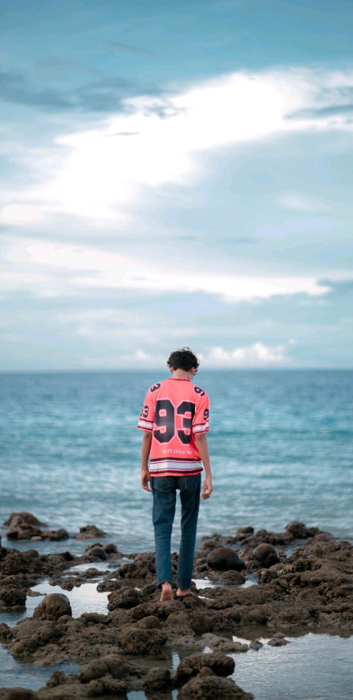

Welcome

Ayo asah otakmu
dengan cara memainkan game ini 🚀
▶️ Mulai
❌ Keluar
© Hari Apri Takandjandji

📚 Pilih Jenjang
🧒 SD
🎓 SMP
📖 SMA
⚙️ SMK
⬅️ Kembali
⚠ WAKTU HAMPIR HABIS ⚠
❤️
3
| ⏳
15
| ⭐
0
⬅️ Kembali
🏁 Hasil
⭐ Skor:
0
🔁 Main Lagi
🏠 Menu
🚪 Kamu yakin ingin keluar dari game?
Ya
Tidak